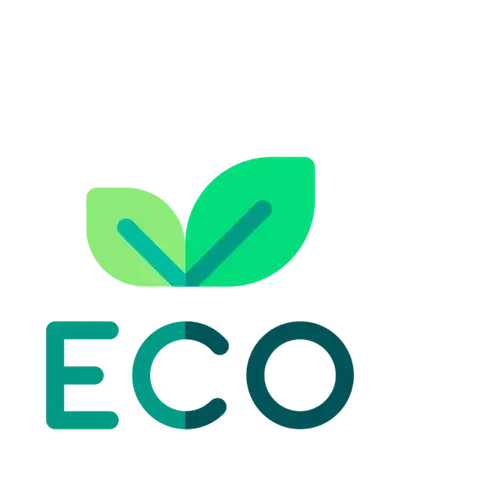
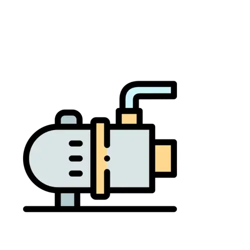

бактерии для выгребных ям, септиков и дачных туалетов
Что такое
Биосептик порошок?
Биосептик порошок — это универсальное средство по очистке канализационных систем для частных домов и дач. В состав входит высокая концентрация микроорганизмов, благодаря чему средство разжижает твердые отходы, корку и донный осадок, устраняет органику. Из-за этого исчезает неприятный запах из канализации, стоки быстрее уходят в грунт, сокращается необходимость вызывать ассенизаторов. Средство не содержит агрессивной химии, поэтому оно безопасно для человека и окружающей среды.
Чем так хорош
Биосептик порошок?

Экологичное средство. Безопасно для людей и животных
Эффект от средства заметите на 4-й день. Исчезает неприятный запах

Снижает в разы количество откачек. За счет разжижения донного осадка
Ситуации в которых необходимо использовать Биосептик порошок
Появился неприятный запах из канализации, дачного туалета
Стоки не уходят в грунт и канализация переполнилась.
Заилилось дно, из-за чего канализация быстро заполняется.
По причине загрязнения стоков часто ломается насос или компрессор в очистительной системе.